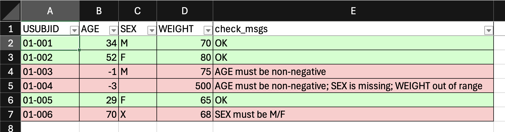
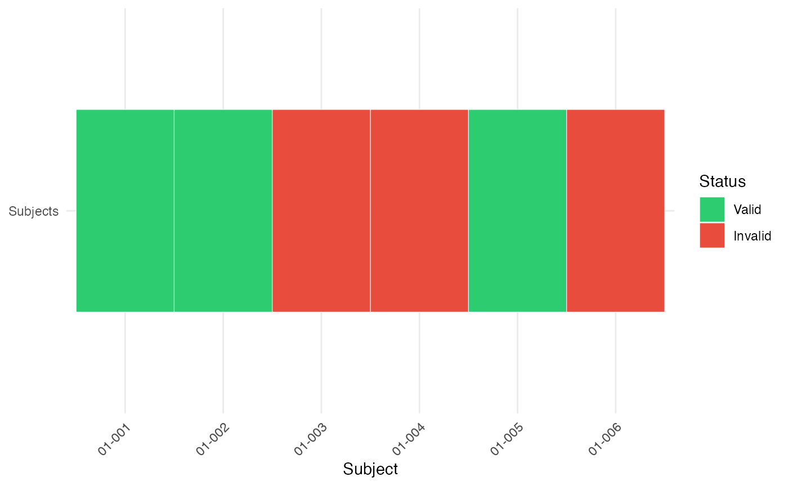
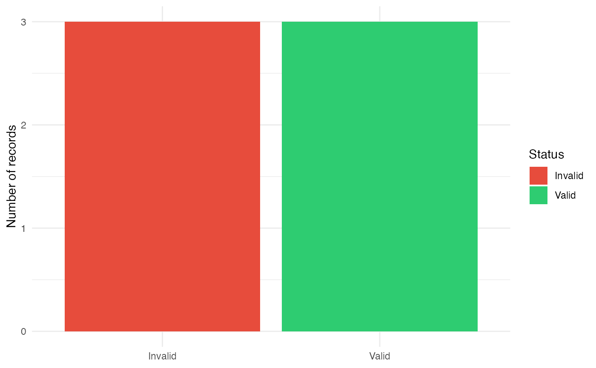
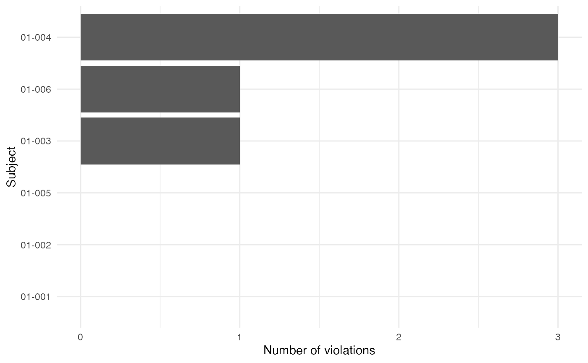

Powerful Data Validation Engine
Source:vignettes/powerful_data_validation_engine.Rmd
powerful_data_validation_engine.Rmd
library(tidyr)
library(dplyr, warn.conflicts = FALSE)
library(tibble)
library(glue)
library(ggplot2)
library(ksCompare)Introduction
Data validation is a critical component of any data analysis
pipeline. In this article, we’ll explore a powerful validation framework
centered around the ks_check_rules() function from the
ksCompare package. This function provides a flexible,
declarative approach to validating data frames with comprehensive error
reporting.
| Function | Purpose |
|---|---|
ks_check_rules |
apply validation rules row-wise |
ks_collapse_check_msgs |
flatten list-column to character |
ks_check_summary |
programmatic overview + violation breakdown |
ks_check_report_html |
self-contained HTML check report |
ks_compare_check_state |
diff two validation runs (new / changed / unchanged) |
ks_save2xlsx_by |
split-by-group XLSX with conditional formatting |
Overview
The ks_check_rules() function we introduced implements a
flexible rule-based validation system for data frames. It enables
specifying validation rules as a list of named rule objects, applying
them against your data, and collecting results systematically.
Key Features
- Declarative rules: Define validation logic in a clean, reusable structure
-
Two evaluation modes:
"first"(stops at first failure) vs."all"(checks all rules) -
Rich diagnostics: Per-row messages; collapse to a
plain character column with
ks_collapse_check_msgs() -
Programmatic summary:
ks_check_summary()returns a tidy overview and violation-by-rule breakdown without writing any file -
Self-contained HTML report:
ks_check_report_html()writes a single portable.htmlfile — no Quarto, knitr, or internet access required -
Run-over-run comparison:
ks_compare_check_state()tags rows as"new","changed", or unchanged relative to a previous snapshot -
XLSX output with highlighting:
ks_save2xlsx_by()splits results into one worksheet per group and applies conditional row colouring driven by the message column
Core Concepts
Rule Structure
Each rule is a list containing two required elements:
rule <- list(
expr = ~ CONDITION_HERE, # One-sided formula with logical expression
msg = "Error message" # Message for failing rows
)Important: The expression should evaluate to
TRUE for failing rows. While this may seem
counter-intuitive at first, it follows the convention of defining
“failure conditions” rather than “passing conditions.”
Data Structure
Your data frame can contain any mix of variable types. Rules will be applied row-wise.
Result Structure
The return value is your original data frame with an additional
column called check_msgs, a list-column where each element
contains:
-
"OK"for rows that pass all validation rules - In
"first"mode: The first failing message (or"OK") - In
"all"mode: A character vector of all violated messages (or"OK")
Usage Examples
Complete Example
Validation rules
Best practice: Group related rules together and use descriptive names. While not mandatory, named rules improve code maintainability and make debugging easier:
# Define validation rules
rules <- list(
# Rule 1: Age must be non-negative
age_non_negative = list(
expr = ~ AGE < 0,
msg = "AGE must be non-negative"
),
# Rule 2: SEX cannot be missing
sex_not_missing = list(
expr = ~ is.na(SEX),
msg = "SEX is missing"
),
# Rule 3: SEX must be M or F (ignoring missing)
sex_valid = list(
expr = ~ !is.na(SEX) & !(SEX %in% c("M", "F")),
msg = "SEX must be M/F"
),
# Rule 4: WEIGHT within reasonable range
weight_range = list(
expr = ~ WEIGHT > 300,
msg = "WEIGHT out of range"
)
)Let’s extend our rules with some advanced expressions. We can use regular expressions easily:
rules <- append(rules, list(
# --- Study Subject Identifier ---
usubjid_format = list(
expr = ~ !grepl("^\\d{2}-\\d{3}$", USUBJID),
msg = "USUBJID must match format: XX-XXX-XXX"
)
))
ks_check_rules(adsl, rules, mode = "all") |>
ks_collapse_check_msgs(col = check_msgs)
#> # A tibble: 6 × 5
#> USUBJID AGE SEX WEIGHT check_msgs
#> <chr> <dbl> <chr> <dbl> <chr>
#> 1 01-001 34 M 70 OK
#> 2 01-002 52 F 80 OK
#> 3 01-003 -1 M 75 AGE must be non-negative
#> 4 01-004 -3 NA 500 AGE must be non-negative; SEX is missing; WEIGHT o…
#> 5 01-005 29 F 65 OK
#> 6 01-006 70 X 68 SEX must be M/FApply rules in first-failing mode:
result_first <- ks_check_rules(adsl, rules, mode = "first") |>
ks_collapse_check_msgs(col = check_msgs)
result_first[, c("USUBJID", "check_msgs")]
#> # A tibble: 6 × 2
#> USUBJID check_msgs
#> <chr> <chr>
#> 1 01-001 OK
#> 2 01-002 OK
#> 3 01-003 AGE must be non-negative
#> 4 01-004 AGE must be non-negative
#> 5 01-005 OK
#> 6 01-006 SEX must be M/FApply rules collecting all failures:
result_all <- ks_check_rules(adsl, rules, mode = "all") |>
ks_collapse_check_msgs(col = check_msgs)
result_all[, c("USUBJID", "check_msgs")]
#> # A tibble: 6 × 2
#> USUBJID check_msgs
#> <chr> <chr>
#> 1 01-001 OK
#> 2 01-002 OK
#> 3 01-003 AGE must be non-negative
#> 4 01-004 AGE must be non-negative; SEX is missing; WEIGHT out of range
#> 5 01-005 OK
#> 6 01-006 SEX must be M/FMode Comparison
| Feature | First Mode | All Mode |
|---|---|---|
| Row processing | Stops at first failure | Checks all rules |
| Performance | Faster (shorter evaluation) | Slower (complete check) |
| Result detail | Minimalist (one message max) | Complete (all relevant messages) |
| Use case | General validation | Thorough validation |
When to Use Which?
# Typical use cases
# Quick validation - stop at first issue found
quick_check <- ks_check_rules(adsl, rules, mode = "first")
quick_check
#> # A tibble: 6 × 5
#> USUBJID AGE SEX WEIGHT check_msgs
#> <chr> <dbl> <chr> <dbl> <list>
#> 1 01-001 34 M 70 <chr [1]>
#> 2 01-002 52 F 80 <chr [1]>
#> 3 01-003 -1 M 75 <chr [1]>
#> 4 01-004 -3 NA 500 <chr [1]>
#> 5 01-005 29 F 65 <chr [1]>
#> 6 01-006 70 X 68 <chr [1]>
# Comprehensive validation - get all issues for full validation
full_audit <- ks_check_rules(adsl, rules, mode = "all")
full_audit
#> # A tibble: 6 × 5
#> USUBJID AGE SEX WEIGHT check_msgs
#> <chr> <dbl> <chr> <dbl> <list>
#> 1 01-001 34 M 70 <chr [1]>
#> 2 01-002 52 F 80 <chr [1]>
#> 3 01-003 -1 M 75 <chr [1]>
#> 4 01-004 -3 NA 500 <chr [3]>
#> 5 01-005 29 F 65 <chr [1]>
#> 6 01-006 70 X 68 <chr [1]>
# Quality assurance check - ensure no errors exist
strict_validation <- function(data, rules) {
result <- ks_check_rules(data, rules, mode = "all")
valid <- purrr::map_lgl(result$check_msgs, ~ "OK" %in% .x)
if (!all(valid)) {
msgs <- unique(unlist(result$check_msgs[!valid]))
stop(
paste0(
"Validation failed:\n",
paste0(" - ", msgs, collapse = "\n")
),
call. = FALSE
)
}
invisible(result)
}
# Demonstrate the strict validation error handling
tryCatch(
strict_validation(adsl, rules),
error = function(e) {
cat("Error caught as expected:\n")
cat(conditionMessage(e), "\n")
}
)
#> Error caught as expected:
#> Validation failed:
#> - AGE must be non-negative
#> - SEX is missing
#> - WEIGHT out of range
#> - SEX must be M/FError Message Design
Follow these guidelines for effective messages:
- Be specific: Identify exactly what’s wrong
- Suggest correction: Include acceptable formats when helpful
- Reference standards: Mention relevant regulations or guidelines
- Use consistent format: Maintain uniform wording conventions
GOOD: "Date format must be YYYY-MM-DD. Value: '01/01/2025' is invalid."
BAD: "Invalid date"Advanced Usage
# Using rlang expressions for dynamic rules
dynamic_age <- function(threshold_age) {
list(
age_threshold = list(
expr = rlang::new_formula(
lhs = NULL,
rhs = rlang::expr(AGE < !!threshold_age)
),
msg = sprintf(
"Age must be at least %d years",
threshold_age
)
)
)
}
# Define rule
validation_age <- dynamic_age(18)We can check our dynamic rules.
-
Rule:
validation_age$age_threshold$expr=> ~AGE < 18. -
Message:
validation_age$age_threshold$msg=> Age must be at least 18 years.
You can also verify the expression evaluates correctly:
rlang::eval_tidy(
rlang::f_rhs(validation_age$age_threshold$expr),
data = adsl
)
#> [1] FALSE FALSE TRUE TRUE FALSE FALSE
# Expected:
# [1] FALSE FALSE TRUE TRUE FALSE FALSE
result <- ks_check_rules(adsl, validation_age)
result |> mutate(
check_msgs = purrr::map_chr(check_msgs, ~ paste(.x, collapse = ", "))
)
#> # A tibble: 6 × 5
#> USUBJID AGE SEX WEIGHT check_msgs
#> <chr> <dbl> <chr> <dbl> <chr>
#> 1 01-001 34 M 70 OK
#> 2 01-002 52 F 80 OK
#> 3 01-003 -1 M 75 Age must be at least 18 years
#> 4 01-004 -3 NA 500 Age must be at least 18 years
#> 5 01-005 29 F 65 OK
#> 6 01-006 70 X 68 OKCategorizing Violations
You can post-process results to categorize violations:
classify_violations <- function(df) {
df %>%
mutate(
violation_type = purrr::map_chr(
check_msgs,
~ if ("OK" %in% .x) "clean" else "dirty"
),
num_violations = purrr::map_int(
check_msgs,
~ if ("OK" %in% .x) 0L else n_distinct(.x)
)
)
}
validation_result <- ks_check_rules(adsl, rules, mode = "all")
classified_data <- classify_violations(validation_result)
classified_data
#> # A tibble: 6 × 7
#> USUBJID AGE SEX WEIGHT check_msgs violation_type num_violations
#> <chr> <dbl> <chr> <dbl> <list> <chr> <int>
#> 1 01-001 34 M 70 <chr [1]> clean 0
#> 2 01-002 52 F 80 <chr [1]> clean 0
#> 3 01-003 -1 M 75 <chr [1]> dirty 1
#> 4 01-004 -3 NA 500 <chr [3]> dirty 3
#> 5 01-005 29 F 65 <chr [1]> clean 0
#> 6 01-006 70 X 68 <chr [1]> dirty 1Generating Summary Reports
ks_check_summary() returns a named list with two tibbles
— overview (one-row totals) and violations
(per-message counts and percentages) — without writing any file:
summary <- ks_check_summary(validation_result)
# Single-row KPI tibble
summary$overview
#> # A tibble: 1 × 4
#> rows_total n_pass n_fail pass_rate
#> <int> <int> <int> <dbl>
#> 1 6 3 3 0.5
# Per-message breakdown (sorted by count descending)
summary$violations
#> # A tibble: 4 × 3
#> message n_rows pct_rows
#> <chr> <int> <dbl>
#> 1 AGE must be non-negative 2 0.333
#> 2 SEX is missing 1 0.167
#> 3 SEX must be M/F 1 0.167
#> 4 WEIGHT out of range 1 0.167For a quick console printout you can format the results yourself:
HTML Check Report
ks_check_report_html() produces a single self-contained
.html file using htmltools and
reactable — no Quarto, no Pandoc. The report contains KPI
cards, a searchable violation summary, and a row-detail table with
status badges.
# Write to disk (auto-names file when path is NULL)
ks_check_report_html(
validation_result,
path = "check-report.html",
title = "ADSL validation",
subtitle = "Study XYZ — run 2026-07-13",
theme = "default" # or "slate"
)
# Return an in-memory htmltools tag list for embedding
report_tags <- ks_check_report_html(validation_result, path = NA)The path argument follows the same three-way convention
as ks_report_html(): NULL → auto-named file in
the working directory, NA → in-memory tag list, or an
explicit file path.
XLSX Export
ks_save2xlsx_by() writes one worksheet per unique value
of a grouping column and applies Excel conditional formatting so rows
are colour-highlighted based on the check_msgs content:
# Add a grouping column (e.g. by domain) and export
validation_result |>
dplyr::mutate(domain = "ADSL") |>
ks_collapse_check_msgs(col = check_msgs) |> # XLSX needs a plain character column
ks_save2xlsx_by(
file = "adsl_checks.xlsx",
colors = c(
"OK" = "#CCFFCC", # green
"must be" = "#FFCCCC", # red (substring match)
"out of range" = "#FFEEAA", # amber
"missing" = "#FFD0D0" # light red
),
split_col = domain,
msg_col = check_msgs
)
To layer a ks_compare_check_state() status column on top
— so new and changed rows are highlighted differently
— pass both status_col and status_colors:
validation_result |>
ks_collapse_check_msgs(col = check_msgs) |>
ks_compare_check_state(
previous = previous_run,
key_cols = "USUBJID",
compare_cols = "check_msgs"
) |>
dplyr::mutate(domain = "ADSL") |>
ks_save2xlsx_by(
file = "adsl_checks_delta.xlsx",
colors = c("OK" = "#CCFFCC", "must be" = "#FFCCCC"),
split_col = domain,
msg_col = check_msgs,
status_col = status,
status_colors = c("new" = "#D0E8FF", "changed" = "#FFF3CC")
)Tracking Changes Across Runs
ks_compare_check_state() compares the current validation
result against a saved snapshot and adds a status
column:
| status | meaning |
|---|---|
"new" |
Subject key not present in the previous run |
"changed" |
Key exists but comparison signature differs |
"" |
Row is identical to the previous run |
# Simulate a "previous" run
previous_run <- ks_check_rules(adsl, rules, mode = "all") |>
ks_collapse_check_msgs(col = check_msgs)
# Current run after data update
current_run <- adsl |>
dplyr::mutate(AGE = replace(AGE, USUBJID == "01-003", 22L)) |> # fix a negative age
ks_check_rules(rules, mode = "all") |>
ks_collapse_check_msgs(col = check_msgs)
# Compare the two runs
delta <- ks_compare_check_state(
current = current_run,
previous = previous_run,
key_cols = "USUBJID",
compare_cols = "check_msgs"
)
delta[, c("USUBJID", "check_msgs", "status")]
#> # A tibble: 6 × 3
#> USUBJID check_msgs status
#> <chr> <chr> <chr>
#> 1 01-001 OK ""
#> 2 01-002 OK ""
#> 3 01-003 OK "change…
#> 4 01-004 AGE must be non-negative; SEX is missing; WEIGHT out of range ""
#> 5 01-005 OK ""
#> 6 01-006 SEX must be M/F ""This is especially useful in iterative QC workflows where you want to confirm that only the intended rows changed between data cuts.
Visualizing Validation Results
There are several possibilities to visualize a validation:
# For a single-row heatmap-like display, add a constant y value.
visualize_results1 <- function(df) {
df <- df %>%
mutate(
status = factor(
ifelse(
purrr::map_lgl(check_msgs, ~ "OK" %in% .x),
"Valid",
"Invalid"
),
levels = c("Valid", "Invalid")
),
y = "Subjects"
)
ggplot(df, aes(x = USUBJID, y = y, fill = status)) +
geom_tile(height = 0.6, color = "white") +
scale_fill_manual(
values = c(
Valid = "#2ecc71",
Invalid = "#e74c3c"
)
) +
labs(x = "Subject", y = NULL, fill = "Status") +
theme_minimal() +
theme(
axis.text.x = element_text(angle = 45, hjust = 1)
)
}
# Alternative: Bar chart (usually more informative)
visualize_results2 <- function(df) {
df %>%
mutate(
status = ifelse(
purrr::map_lgl(check_msgs, ~ "OK" %in% .x),
"Valid",
"Invalid"
)
) %>%
ggplot(aes(status, fill = status)) +
geom_bar() +
scale_fill_manual(
values = c(
Valid = "#2ecc71",
Invalid = "#e74c3c"
)
) +
labs(
x = NULL,
y = "Number of records",
fill = "Status"
) +
theme_minimal()
}
# Alternative: Show number of violations per subject
# If subjects can have multiple violations, this is often the most useful diagnostic plot:
visualize_results3 <- function(df) {
df %>%
mutate(
n_violations = purrr::map_int(
check_msgs,
~ if ("OK" %in% .x) 0L else length(.x)
)
) %>%
ggplot(aes(reorder(USUBJID, n_violations), n_violations)) +
geom_col() +
coord_flip() +
labs(
x = "Subject",
y = "Number of violations"
) +
theme_minimal()
}
# Example visualization
visualize_results1(validation_result)
visualize_results2(validation_result)
visualize_results3(validation_result)
For a data validation engine, the last plot tends to be the most actionable because it immediately highlights the worst offending records.
Common Patterns and Recipes
Conditional Checks
rules_conditional <- list(
# If treatment is "Placebo", then dose must be zero
placebo_zero_dose = list(
expr = ~ TRTP == "Placebo" & DOSE != 0,
msg = "Placebo must have zero dose"
),
# If value is missing, flag specific column
aval_not_missing = list(
expr = ~ is.na(AVAL),
msg = "AVAL cannot be missing"
)
)Reference Data Checks
# Predefined reference values
reference_values <- tibble(
code = c("M", "F", "U"),
description = c("Male", "Female", "Unknown")
)
rules_reference <- list(
sex_known_values = list(
expr = ~ !is.na(SEX) & !(SEX %in% reference_values$code),
msg = glue("Invalid SEX code. Must be one of: {paste(reference_values$code, collapse = ", ")}")
)
)Group-Specific Validation
# Define group-specific rules
group_rules <- list(
control_group = list(
list(expr = ~ TRTP == "Placebo" & DOSE != 0,
msg = "Control group must receive zero dose"),
list(expr = ~ TRTP == "Placebo" & !is.na(TRTA),
msg = "Control group TRTA should be empty")
),
treatment_group = list(
list(expr = ~ TRTP == "Drug A" & DOSE < 10,
msg = "Treatment group requires dose ≥ 10"),
list(expr = ~ TRTP == "Drug A" & DOSE > 200,
msg = "Treatment group dose too high (>200)")
),
# Default rules for all groups
common_rules = list(
list(expr = ~ is.na(USUBJID),
msg = "Subject ID required for all subjects"),
list(expr = ~ nchar(TRTP) < 1,
msg = "Treatment name must be specified")
)
)
# Apply group-specific validation
validation_result <- clinical_data |>
mutate(group = case_when(
TRTP == "Placebo" ~ "control",
TRTP %in% c("Drug A", "Drug B") ~ "treatment",
TRUE ~ "other"
)) |>
group_by(group) |>
ks_check_rules(
rules = group_rules[[cur_group()]],
mode = "all"
) |>
ungroup()Best Practices
Modular Rule Definitions: Organize rules into logical groups (entity-specific, business-specific, technical)
Descriptive Error Messages: Include enough context to help data stewards understand and fix issues
Validation Layering: Apply rule sets in logical sequences (format checks → range checks → business rules)
-
Performance Considerations:
- Order performance-intensive rules first
- Use “first” mode for critical validation paths
- Consider caching rule compilation results
-
Documentation: Every rule should have clear documentation explaining:
- What the rule checks
- Why it matters
- Expected data patterns
Configuration Management: Store rule parameters externally whenever possible for easier maintenance
Graceful Degradation: Allow partial validation when complete rule sets aren’t available
Integration Testing: Always validate with realistic test data that includes boundary cases
Conclusion
The ks_check_rules() framework represents a robust and
flexible approach to data validation. By providing granular control over
validation rules, performance-optimized execution, and clear error
reporting, it enables data teams to build reliable validation
pipelines.
Key Benefits
Modular Architecture
- Rules are decoupled from business logic
- Easy to extend and maintain
- Supports dynamic rule configuration
- Early-exit “first” mode for critical validation
Seamless tidyverse Integration
- Supports custom rule definitions
- Integrates naturally with data processing pipelines
- Works with standard tidyverse verbs (
mutate(),filter(), etc.)
What’s Available Now
| Function | What it does |
|---|---|
ks_check_rules() |
Apply validation rules row-wise (modes: "first" /
"all") |
ks_collapse_check_msgs() |
Flatten list-column to plain character |
ks_check_summary() |
Programmatic overview + per-message violation breakdown |
ks_check_report_html() |
Self-contained HTML report (htmltools + reactable) |
ks_compare_check_state() |
Diff two runs — tag rows as new / changed / unchanged |
ks_save2xlsx_by() |
Split-by-group XLSX with conditional row colouring |
Future Roadmap
- Rule metadata annotations (severity levels, regulation references)
- Cross-dataset relational checks (e.g. validate ADAE against ADSL keys)
- Performance optimizations for datasets > 1 M rows
Final Thoughts
This validation framework represents more than just error checking—it’s a strategic data governance mechanism. By investing in thoughtful validation patterns today, organizations can prevent downstream data issues, improve data quality, and reduce long-term maintenance costs.
The modular design allows for incremental adoption: start with basic
schema validation, then progressively add business rules, cross-field
checks, and custom validation patterns. With comprehensive documentation
and practical examples, ks_check_rules aims to become an
essential tool for serious data practitioners.